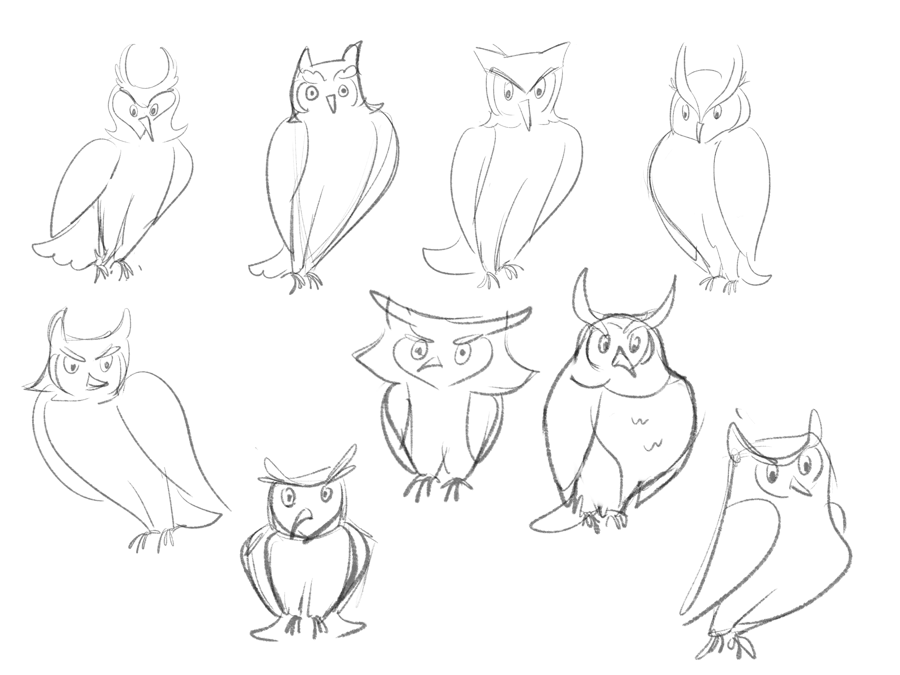
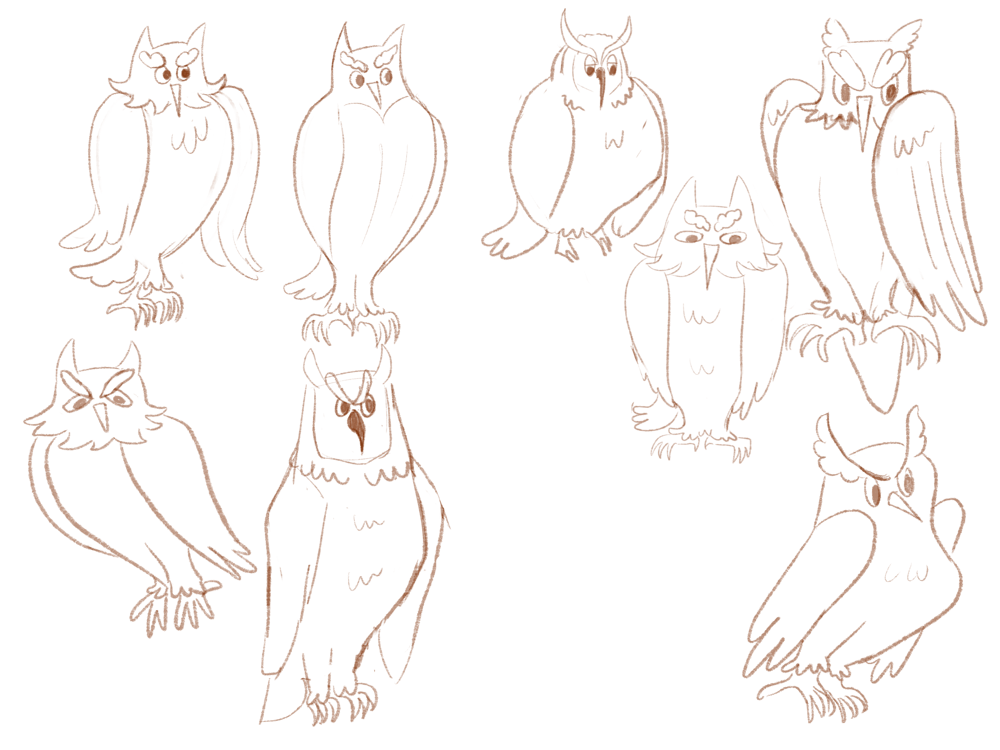
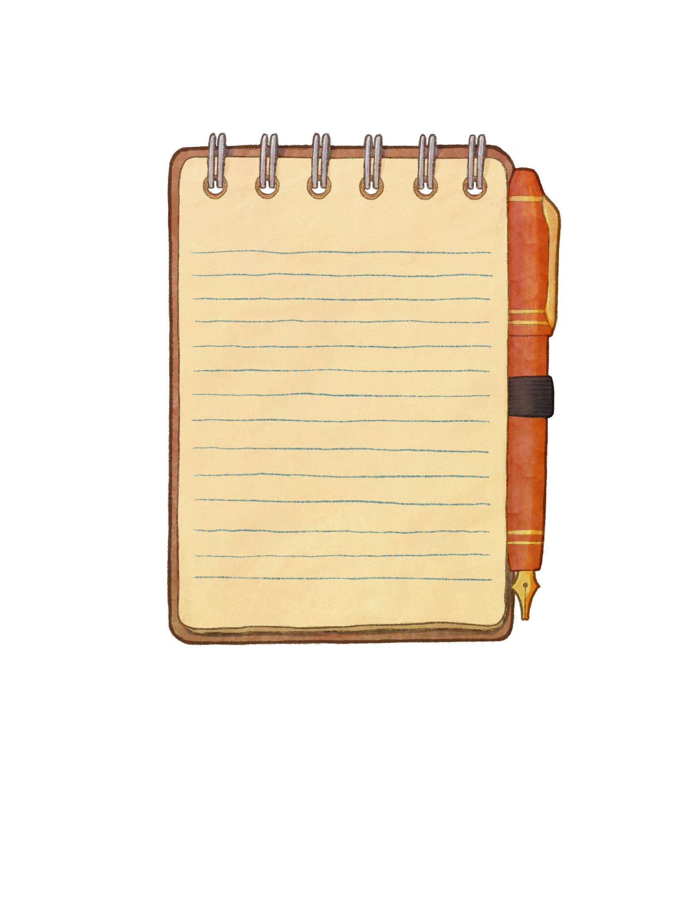

Tuesday
Created the text placements to export as PNGs for Stef following the Reuters scrollytelling piece, highlighting key/fun words.

Wednesday
Finished up text placements, worked with Stef to make sure the PNGs weren’t blurry and the placement fit with the other assets. I also started working on design document — fixing up previous slides and updating with new information.
Also created a design document checklist to use with the rest of the group — I wanted to take on more of the design document since Emily has been busy with assets and stef and priya with development, but I felt it would be easier for them to fill out their corresponding sections in the design doc so I wouldn’t have to guess what their workflow was. To make the transition as seamless as possible, I provided screenshots from previous design documents and a written description the type of content they could add.
While fixing up the design document, I’d help test out our project (Stef was coding beside me) and help troubleshoot with ChatGPT and logical conceptualization of how the code could work. We were able to figure out how to make the scrollbar clickable (it would be there but wouldn’t be interactive) and a page loading issue, where sometimes scrolling wouldn’t work and the page had to be refreshed multiple times before scrolling properly.
Thursday
Continued to work on the design document — finding citations, reconstructing our user journey map to reflect the changes we made and to make it more readable, etc.
I also took on the task of colouring Beanie based on Emily’s sketches and helping create an the animal assets to help out with Emily’s workload. I really admire Emily’s playful yet detailed colouring style and used her raccoon asset as a guide for how to approach colouring Beanie.
To try to enhance the cartoon/children’s book-like aesthetic, Stef and I created scrappy initial sketches and traded them with each other to help get different perspectives with the drawing. This was a really fun exercise and helped us think more creatively, since we were trying to enhance someone else’s sketches rather than our own.


Friday
Continued to work on colouring Beanie’s asset with feedback from the group to make the style more similar to that of the other animal assets.
Saturday
Long work day today! I finished up colouring Beanie and his bandana, exporting the assets to Stef to integrate into our code, and worked on finishing up another animal asset. After finalizing the sketches for the toad and owl, I did the line art for both while Stef was still coding and coloured the owl asset. After this, I handed off the toad lineart to Stef to complete and wrapped up the day by working on the design document - adding in citations and editing sections to reflect the new scope of our project.


Sunday
After looking at all of the completed assets, I had been feeling like the notepad asset didn’t fit as much. I decided to redo it to match the style of the other images — at this point I felt like I had a good grasp of how to design and colour it and felt confident enough to take it on. I simplified the top part of the notepad which was drawing a lot of attention (and frankly did not make sense now that I look at it — why would you have a spiral notepad with a tear away feature??) and changed the colour of the pen to match beanies bandana and create a more cohesive look. I also layered a paper texture on multiply overtop to achieve a scrapbook-like effect and applied a similar purple-blue gradient to unify the notepad with the background. After finishing the asset, I combined it with the new animal assets to recreate the completed notepad entries.

After this, I helped out with fixing the style of the buttons — Emily and I wanted them to also have a playful feeling — currently our buttons were styled in CSS but felt almost ad-like to us, especially when leaving the quiz. Emily helped design the new buttons and I was able to go into the code and replace the button with a png (this sounds easy but took me a good 7-8 hours to put in 4 buttons).
Sunday
Helped out with final touches on the design document and presentation!! We also did a test run in the larger media lab to make sure that all of the images were layering like we wanted to on the big screen.